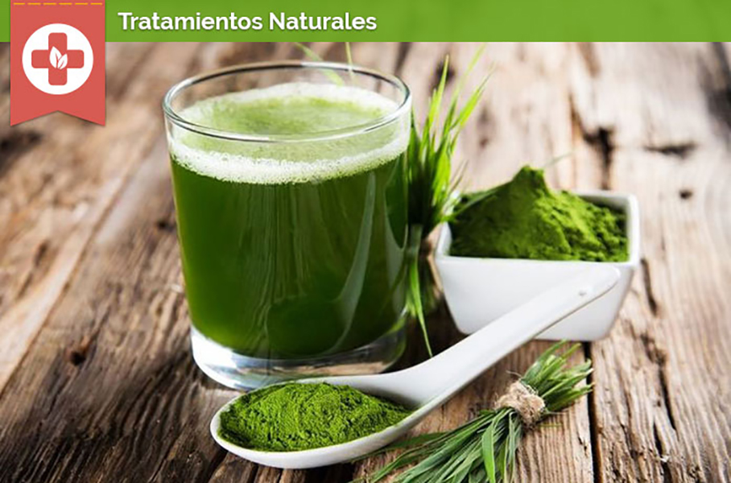
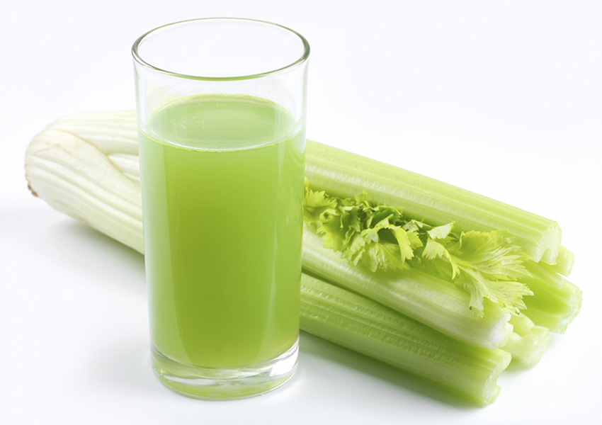
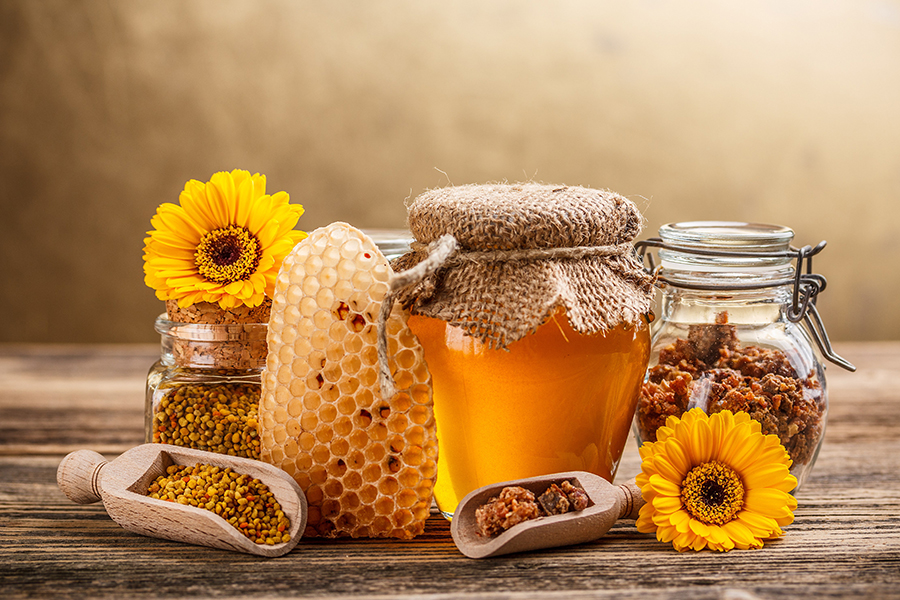

¿Para qué es buena la moringa?

Propiedades medicinales y nutricionales y usos de la moringa. La moringa, Moringa oleifera, es un árbol nativo de India que crece en países subtropicales del continente asiático y africano. Tradicionalmente, de la moringa se utilizan sus hojas, vainas, semillas, aceite, flores, raíces, ramas y corteza tanto para consumo alimenticio como para recuperar y mantener la salud debido a sus cualidades terapéuticas. Cuando leas el artículo verás que no es una casualidad que a la moringa se le llame el árbol de la vida.
Valor nutricional de la moringa: El contenido en vitaminas, minerales, ácidos grasos y aminoácidos de la moringa la han convertido en un estupendo recurso natural para prevenir la carencia de estos nutrientes básicos.
Por otra parte, la gran cantidad de polifenoles y flavonoides que contiene la moringa son los responsables de su actividad medicinal. Vamos a conocer para qué es buena la moringa y 15 usos medicinales comprobados en estudios clínicos.
15 usos medicinales comprobados de la moringa
1.- El extracto de hojas de moringa tiene gran poder antioxidante. Las hojas de la moringa contienen varios tipos de antioxidantes diferentes, como el ácido ascórbico (vitamina C), carotenoides, flavonoides y fenoles. Estos componentes son capaces de inhibir el daño oxidativo en nuestro ADN.
2.- La moringa y la diabetes. Las hojas de moringa poseen acción antidiabética o antihiperglucemiante. En un estudio llevado a cabo en personas con diabetes tipo II con polvo de hoja de moringa se demostró que redujo los niveles de azúcar en sangre por su efecto antidiabético, y por lo tanto, tuvo un impacto beneficioso para la salud de estas personas.
3.- La moringa y el colesterol. Las hojas de la moringa molida y su extracto tienen actividad antidislipidémica, reduciendo los niveles de lípidos o grasa en sangre. Este efecto es muy beneficioso para personas con problemas de alteraciones y/o exceso de lípidos en sangre como colesterol. Pero además, en un estudio llevado a cabo en ratas, se observó también una reducción en la grasa acumulada en el hígado y de la bilirrubina.
4.- Moringa para curar heridas y proteger los tejidos. Otra cualidad terapéutica que se ha observado del estudio clínico de la actividad medicinal de la moringa es que protege los tejidos de órganos tan importantes como el hígado, el corazón, los riñones, los testículos o los pulmones. Además la moringa es efectiva para estimular la curación de heridas y que tengan una buena cicatrización.
5.- Moringa para los dolores. La acción analgésica de la moringa puede mitigar o aliviar dolores que podamos padecer en nuestro organismo. En particular, se ha demostrado que la moringa es efectiva para reducir los dolores ocasionados por la artritis.
6.- Moringa para úlceras de estómago y acidez. el efecto antiulceroso que posee la planta de la moringa lo convierte en un remedio natural para prevenir las úlceras de estómago y protegerlo de estos daños. En estudio llevado a cabo en personas con úlceras ocasionadas por la toma de medicamentos farmacológicos (aspirina) la moringa fue útil para proteger el estómago ante úlceras, para mejorar su estado en caso de que existan y además se redujo la acidez gástrica.
7.- Moringa para hipertensión. La acitividad antihipertensiva de la moringa es sumamente beneficiosa para las personas que tengan hipertensión arterial o tensión alta, ya que, el exceso de presión de forma continuada sobre las paredes de las arterias conllevar dolor de piernas al caminar, impotencia en hombres, problemas de vita, insuficiencia renal, hipertrofia del corazón, arritmias, insuficiencia coronaria y angina de pecho.
8.- La moringa tiene efecto antiinflamatorio. Otro efecto observado del efecto medicinal de la moringa es que tiene actividad antiinflamatoria, siendo de gran ayuda en aquellas condiciones médicas que están causadas por inflamación o que incluyen la inflamación como síntoma (como por ejemplo obesidad, artritis, traumatismos, etc.).
9.- La moringa protege el hígado. Entre las acciones principales de esta planta medicinal podríamos resaltar su acción hepatoprotectora. Será de gran utilidad para las personas que deseen prevenir dolencias de hígado o que ya las tengan y quieran recuperar la salud en lo posible.
10.- La moringa y el cáncer. Se ha observado clínicamente el efecto del extracto de hojas de moringa que inhibe la proliferación de células cancerosas, en particular en células cancerígenas en el pulmón y en otros órganos.
11.- Prevenir cataratas con moringa. La moringa nos ayuda a cuidar la vista y puede prevenir daños degenerativos como la aparición de cataratas, especialmente cuando las cataratas se deben a la diabetes.
12.- La moringa y el sistema inmunológoco. Estudios clínicos llevados a cabo en animales con el sistema inmunológico deprimido evidenciaron el efecto inmunoestimulante de la moringa, es decir, que esta planta es capaz de mejorar la función del sistema inmunológico. Curiosamente se obtuvieron mejores resultados con pequeñas dosis al ser éstas más efectivas.
13.- Moringa y el sistema nervioso central. La acción neuroprotectora de la moringa se sigue estudiando, pero en ensayos clínicos se ha podido observar cómo la moringa puede estimular la función cognitiva (como favorecer el aprendizaje y la memoria) y proteger el sistema nervioso central en casos de demencia. Incluso se ha podido observar que con dosis orales de moringa se ha atenuado la disfunción cerebral inducida por isquemia.
14.- La moringa y el asma. En estudios llevados a cabo en animales y también en personas con asma, se observó una mejora y una remisión de los síntomas de esta dolencia del aparato respiratorio una vez concluido el estudio. Por lo tanto, otra cualidad del árbol de la vida es que tiene acción antiasmática y que mejora los síntomas del asma bronquial en personas y animales.
15.- La moringa es cardioprotectora. Además de todo lo mencionado anteriormente, podemos añadir que la moringa cuida de nuestro corazón y favorece que éste siga realizando sus funciones de manera óptima. La moringa estimula la circulación de la sangre, tiene un ligero efecto anticoagulante y podría prevenir enfermedades cardiovasculares, que hoy en día son la primera causa de mortalidad en todo el mundo.
Además se están llevando a cabo más estudios clínicos con la moringa y con algunos de sus componentes aislados que parecen ser muy prometedores, como por ejemplo su posible acción neuroprotectora. La moringa es una planta con inmenso potencial medicinal.
Partes de la moringa que se utilizan para fines alimentarios y medicinales
Esta es información general, para cualquier consulta acude a un profesional de la salud que pueda recomendarte lo mejor en base a tus circunstancias personales.
Los beneficios nutricionales y medicinales del apio

El apio es una hortaliza muy saludable con grandes propiedades nutricionales y medicinales. No puede faltar a la hora de preparar caldos y platos tan completos, nutritivos y tradicionales como los potajes o pucheros. Hipócrates ya lo utilizaba por sus propiedades medicinales y los romanos y griegos lo utilizaban tanto por sus usos culinarios como curativos. Desde luego, es una verdura importante a incluir de forma habitual, en especial si estás haciendo dieta para adelgazar y quieres perder peso de forma saludable.
El apio se puede consumir cocinado y también crudo en ensaladas y para acompañar hummus y otros dips.
Propiedades nutricionales del apio
El apio contiene vitaminas A, B1, B2, B6, B9, C y E, minerales como el potasio, sodio, calcio, zinc, magnesio, hierro, azufre, fósforo, cobre y silicio, aceite esencial y fibra.
El apio es una verdura con acción antioxidante, cardioprotector, antibacteriana, diuretica, antiinflamatorio, expectorante, depurativa, sedante, digestiva, inmunoestimulante, analgésico.
Beneficios para la salud del consumo del apio
Es uno de los diureticos más potentes.
Aumenta nuestras defensas naturales.
Debido a su accion expectorante, es muy útil para eliminar mucosidad.
Está indicado en dolencias con inflamacion.
Produce una inhibición en el desarrollo de células cancerígenas.
Ayuda a depurar el organismo.
Estimula la eliminación de líquidos acumulados en el organismo.
Contribuye al buen funcionamiento del sistema nervioso y muscular.
El apio ayuda a reducir la tensión arterial.
Mejora el peristaltismo intestinal.
Favorece la reduccion de los niveles de glucemia en sangre.
Está recomendado en dolencias articulares y reumatismo.
La fibra del apio ayuda a reducir el colesterol en sangre.
Es un excelente remineralizante.
Mejora los casos de gota, acido úrico alto o hiperuricemia.
Puede aliviar los dolores articulares.
El apio combate los daños de los radicales libres.
Nos ayuda a prevenir el estreñimiento.
Puede contribuir a eliminar los cálculos renales y biliares.
Acelera la cicatrización de heridas.
Es de ayuda en casos de fatiga crónica o de astenia y cansancio.
Polen de abeja: propiedades y beneficios

El polen de abejas es un pequeño tesoro alimenticio del que cada vez se descubren más sustancias nutritivas. Su compleja composición contiene valiosas enzimas, vitaminas y minerales que hacen de él un complemento ideal para reforzar el sistema inmunológico especialmente en épocas de cambio de estación.
Un complemento reconstituyente
Una variada lista de enzimas, que forman las proteínas, el material básico de todas las células, que regulan y activan los procesos vitales del organismo, están presentes en esta joya de la naturaleza: diastasa, amilasa, catalasa, diaforasa, dihidrogenasa láctica, pectasa, fosfatasa y sacarosa entre otras.
Por otro lado contiene vitaminas A, D, E, B1, C, K, colina y rutina, así como otras que no se han identificado todavía. Y también una completa lista de minerales y oligoelementos: sodio, potasio, magnesio, calcio, aluminio, hierro, cobre, cinc, manganeso, plomo, sílice, fósforo, cloro y azufre. La combinación de todos ellos juntos, que no se encuentra en ningún otro alimento natural o suplemento preparado, hacen de él una fórmula óptima para reconstruir toda clase de tejidos, debido a su alto valor nutritivo.
Más que un alimento
El polen es mucho más que un concentrado de vitaminas y minerales. Además de nutrir y aumentar la actividad enzimática, esencial para el buen funcionamiento del metabolismo, equilibra el ph de la sangre y aumenta la hemoglobina, por lo que es un buen regenerador sanguíneo.
Pero todavía hay algo más importante: el conjunto de sus elementos interfiere y facilita procesos fisiológicos relacionados con una acción antimicrobiana. Según algunas experiencias clínicas se sabe que junto a otros productos de las abejas como son el própolis y la jalea, actúa contra las bacterias, levaduras y hongos. Se ha tratado de aislar estos principios activos, pero se ha visto con claridad que actúan como inhibidores cuando están todos juntos. Resulta pues ser preventivo y adecuado contra numerosas infecciones.
De muy fácil asimilación
El polen está compuesto de unos glucósidos que apenas necesitan digestión, sino que pasan directamente del estómago a la corriente sanguínea, mediante el fenómeno de la persorción: se puede observar su presencia en la sangre y en la orina solamente dos horas después de ingerirlo. Por esta razón se recomienda tomarlo fuera de las comidas y especialmente en ayunas, para obtener un eficaz y rápido reparto de nutrientes.
¿Para qué casos está indicado?
Las “curas” de polen durante cierto tiempo son muy adecuadas para recuperar fuerzas después de estados convalecientes, en casos de fatiga o cansancio crónicos o semicrónicos, astenias primaverales u otoñales, debilitamientos en general, apatías y anemias, ya que aumenta la producción de hemoglobina, en pocas palabras, renueva la sangre.
Es un buen ayudante para el hígado: sus glucósidos predigeridos aumentan y facilitan la formación del glucógeno que se almacena especialmente en este órgano, de ahí su ayuda para cansancio o la anemia antes mencionados. Por otro lado se ha observado un efecto corrector en altos niveles de colesterol.
Asimismo da buenos resultados en problemas de la menstruación o trastornos de la menopausia asociados a inflamaciones de estos tejidos, así como de la próstata o incluso de las vías respiratorias. Aquí incluiríamos al cerebro, y con él, un aumento de la concentración y la memoria y la motivación en general, siendo especialmente apropiado para los ancianos.
Tomado con regularidad, es un complemento excelente para casos de depresión y ansiedad, irritabilidad y neurastenia. Aporta energía rápidamente, y es un regenerador de primera calidad. Incluso se habla de que es capaz de restablecer algunas proteínas que se rompen debido a frecuentes exposiciones a radiaciones.
Desde la caída del cabello (el polen contiene cistina, de la que hay un 17% en el cabello), hasta el reumatismo y la artritis, y prevenir la gripe, actuando como barrera inhibidora de ciertos gérmenes, podemos decir de él que es un remedio bastante universal, eso sí, tomado con constancia. No se trata de ningún producto milagroso ni cura nada de repente, sino más bien de una aportación extra para el cuidado de la salud, casi a modo de higiene.
¿Cuándo conviene realizar la cura?
Aunque cualquier momento es bueno para hacer un refuerzo nutricional, se recomienda especialmente, estando en condiciones normales de salud, realizarlo en épocas de cambio de estación, preparando así al cuerpo para hacer frente a las nuevas solicitudes que el organismo requiere responder ante los cambios de clima.
Dependiendo de cada persona, según su constitución, su estilo de vida y alimentación, se puede prolongar más o menos, según se vayan notando los efectos. Pero cualquier cura necesita al menos un mínimo de tres semanas, aunque lo más eficaz sería entre seis y diez.
Algunos naturópatas proponen hacerlas antes de las estaciones del polen, esto es primavera y otoño, o bien recién empezadas (por cierto, se ha comprobado que también puede actuar a modo de “vacuna” o antídoto para las alergias al polen) de cara a prepararse para estas estaciones que suelen afectar más a las personas sensibles.
En caso de enfermedades crónicas cualquier momento es bueno, aunque parece que es mejor aprovechar los meses de adaptación al nuevo clima, pero entonces el tratamiento debe durar al menos tres meses para percibir un cambio notable.
Para preparar las defensas, basta con seis semanas durante la primavera o el otoño. Es bueno hacerlo una o dos veces al año.
Cómo tomar el polen de abeja
Las tomas pueden ir desde media cucharadita para los niños, a partir del año, hasta tres completas para adultos durante el día, mejor fuera de las comidas, solas o bien ingeridas con alimentos que también contengan enzimas y nutrientes vivos, como yogurt o zumo de frutas recién exprimidos.
Si lo dejamos actuar a sus anchas lejos de las digestiones, se aprovechará mejor, ya que estas requieren mayor aflujo de sangre y actividad en el estómago, y no quedará diluido entre los jugos gástricos.
Como es rico en hidratos de carbono, es preferible tomarlo por las mañanas, para que tengamos todo el día para “quemar” la energía que nos proporciona. Muy importante: consumido a estas horas reduce la apetencia de los dulces durante el resto del día.
Tengamos en cuenta también observar la alimentación esas semanas, y no tomar demasiadas grasas o azúcares que podrían entorpecer la labor de este preciado suplemento.
¿Pueden tomarlo los diabéticos?
Los diabéticos de tipo uno y dos se beneficiarán de la vitaminas que contiene porque repara los tejidos de las heridas a las que son propensos y evita infecciones, se refuerza la inmunidad con los antioxidantes, y su complejo vitamínico del grupo B les ayudará a recuperar la energía.
Si toleran la fructosa, también toleraran sus glucósidos, además su impacto es mucho menor porque están mezclados con muchos otros componentes. A la larga, sustituyendo una parte del consumo de fructosa permitido para cada caso, ayuda a regular la glucosa.